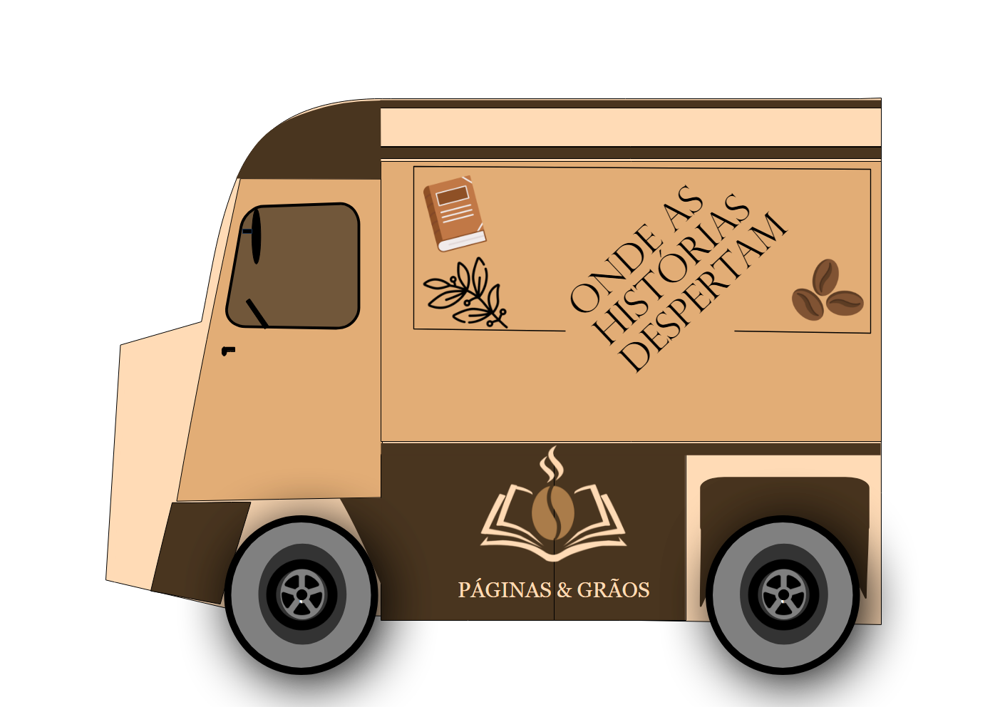

Unimos forças com produtores locais e frotas dedicadas para levar o melhor até você.
🚚 LOGÍSTICA LITERÁRIA & GRÃOS SELECIONADOSPara que cada xícara de espresso e cada livro cheguem perfeitos às suas mãos, a Páginas & Grãos conta com uma rede de parceiros altamente qualificados. 🚜 Cooperativas de Café Artesanal: Trabalhamos diretamente com pequenos produtores da região que cultivam grãos 100% arábica de forma sustentável, garantindo um comércio justo e a máxima qualidade na sua xícara. 📦 Editoras Independentes: Nossas estantes são abastecidas por parceiros locais que valorizam a literatura, trazendo títulos exclusivos e novos autores para o nosso refúgio. ⚡ Nossa Frota de Distribuição: Graças aos nossos parceiros de transporte e logística (representados pelo nosso veículo oficial ao lado), conseguimos abastecer nossos estoques e realizar eventos itinerantes de leitura na cidade de forma rápida e segura! |
 "Levando aroma, sabor e conhecimento para todos os cantos da cidade." |